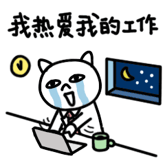

Charles SHU
A Developer with unprecedented love & passion in coding!
I'm Charles, a web developer with passion, dedication and love in the coding field. Here is my story:
Stay Hungry, Stay Foolish.Comfort is never the ultimate goal of life. I used to worked in the financial field with good education background and a decent income, but I wanted more. I like technology, I like creativity, and most of all, I fear no challenging. Therefore I asked to myself: Hey, why not go out and do something you really like?
Coding is like Pandora's box, it is bottomless, mystery and appealing. Many have attempted to extract the treasure inside but most of them eventually failed. I, as a young and hungry warrior, spent one year, literally all day and night, in picking up all relevant knowledge and skills which would normally take for years. After that, I devoted myself into a series of practical projects, and realized that all we have learnt in school is everything and, from another point of view, nothing.
My craziness about coding.Since practice is the only way leading to success, I took part in as many projects as possible. I might not graduate from top university in New Zealand, but I believe I do much more coding than any of them.
You can check my work on my github, which contains part of my repositories. Basically I created 5 commits per day in average, without resting on weekends.
You can also see some other of my projects which are not included in my github. I put the list HERE in my personal website.
I like to keep everything in order and on record, probably a compulsive obsession to make perfection. Thus I made this website: Charles' Alien World. It is not only a platform served as a personal blog, but also a palace I create to test and record all my coding skills. It is now a huge archive filled with my personal study notes, work reports and articles.
Feel free to contact me.Currently I am living in Auckland and actively looking for an opportunity in the coding field. You can find my digital CV on this website. Also, see a complete list of my skills HERE or on my LinkedIn.
If you are interested in what I have done and, more importantly, what I will contribute, please click HERE to contact me. Or you can find some more ways to reach me by clicking on the secret icon of the title bar.